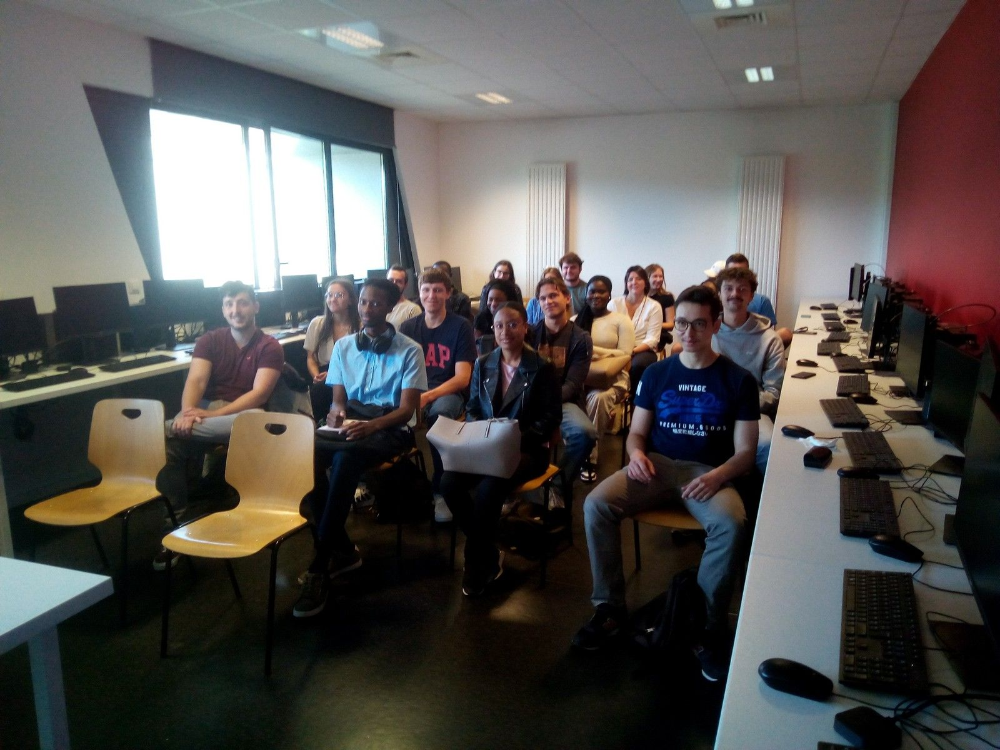

Programme du 01/02/2024
Buffet
Accueil des entreprises
Les étudiants sont éventuellement convié à ce repas.
8h30 - 9h00
Ouverture de la journée
Discours de M. Rakotomalala, responsable du Master SISE et Introduction par l'équipe DataDay
Lancement de la 9ème édition du Data Day
9h00 - 9h20
Les entreprises
Thèmes propres à chacune
Présentation par les professionnels du monde de la science des données. Elles se feront par lots de 20-25 minutes avec une pause de 15 minutes en milieu de matinée.
9h20 - 12h30
Challenges
Lancement des challenges (débutants, intermédiaires et avancées)
Venez tester et/ou confirmer vos compétences sur quelques exercices que nous proposons avec le langage que vous aimez.
14h00
Gratification des meilleurs résultats
Les meilleurs algorithmes sont récompensés.
16h00-16h45
Intervenants
Crédit Agricole Technologies et Services
Crédit Agricole Technologies et Services est le partenaire informatique et technologique des 39 Caisses régionales du Crédit Agricole. Il assure la conception, la fabrication et la maintenance du système d'information bancaire.
Centre Léon-Bérard
Centre de lutte contre le cancer de Lyon et de Rhône-Alpes, le Centre Léon Bérard est un hôpital spécialisé en cancérologie.
Le Centre Léon Bérard est membre d’UNICANCER (Fédération nationale des centres de lutte contre le cancer). Ce groupe rassemble 20 hôpitaux français dédiés aux patients atteints de cancer.

Business & Decision - Orange Business Services
Business & Decision a rejoint le groupe Orange et est une Direction d’Orange Business Services SA.
Ses équipes conçoivent et déploient les solutions et les services les plus innovants pour accompagner les directions métier à relever les défis majeurs de transformation de leurs organisations par l’adoption des technologies de pointe (Data Intelligence, Big Data et Data Gouvernance).
Keyrus
Keyrus est une société de conseil internationale spécialisée dans le développement de solutions technologiques de données et digitales innovantes pour la gestion des performances. Nous aidons des sociétés comme la vôtre à tirer le meilleur parti possible de leurs données tout en optimisant leurs stratégie et expérience digitales.
Qui sommes-nous ?
Université Lumière Lyon 2
L'Université Lumière Lyon 2 est une institution d'enseignement supérieur réputée en France offrant une large gamme de programmes académiques.
Elle se distingue sur son engagement envers l'excellence académique et la diversité culturelle, offrant ainsi aux étudiants un environnement d'apprentissage
stimulant.
MASTER 2 SISE
Master SISE
Le master 2 SISE (Statistiques et Informatiques pour la Science des donnEes) est un programme avancé qui forme les étudiants à l'analyse de données, la modélisation statistique et la gestion de projets informatiques.
Il prépare les diplômés à exceller dans le domaine en croissance rapide de la science des données en combinant une expertise en statistique, en informatiques
et en gestion des données.

Promotion SISE 2023-2024
La promotion SISE 2023-2024, comme toutes les autres, représente une génération prometteuse d'experts en statistiques et en informatiques pour la science des données.
Ces étudiants sont prêts à relever les défis de l'analyse de données avancées et à contribuer de manière significative à l'innovation dans le domaine de la data science.